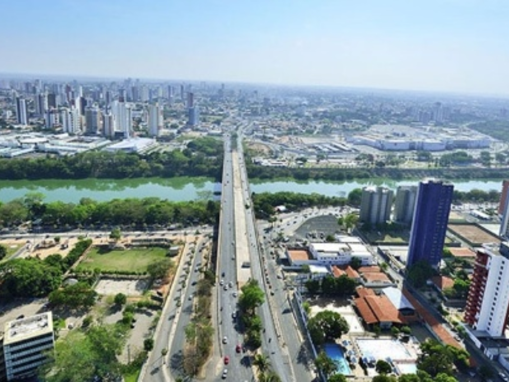

O Piauí é conhecido por suas paisagens naturais e clima quente. Sua capital é Teresina, única capital nordestina que não fica no litoral. A economia do estado é baseada na agricultura, pecuária e comércio. O Piauí possui importantes atrações turísticas, como o Parque Nacional da Serra da Capivara, famoso pelas pinturas rupestres. O litoral do estado é pequeno, mas possui belas praias. A cultura piauiense é marcada pelas tradições populares e culinária típica. O estado apresenta crescimento na produção agrícola. Mesmo assim, ainda enfrenta desafios sociais em algumas regiões. O Piauí é importante pela sua história e patrimônio arqueológico.

Voltar